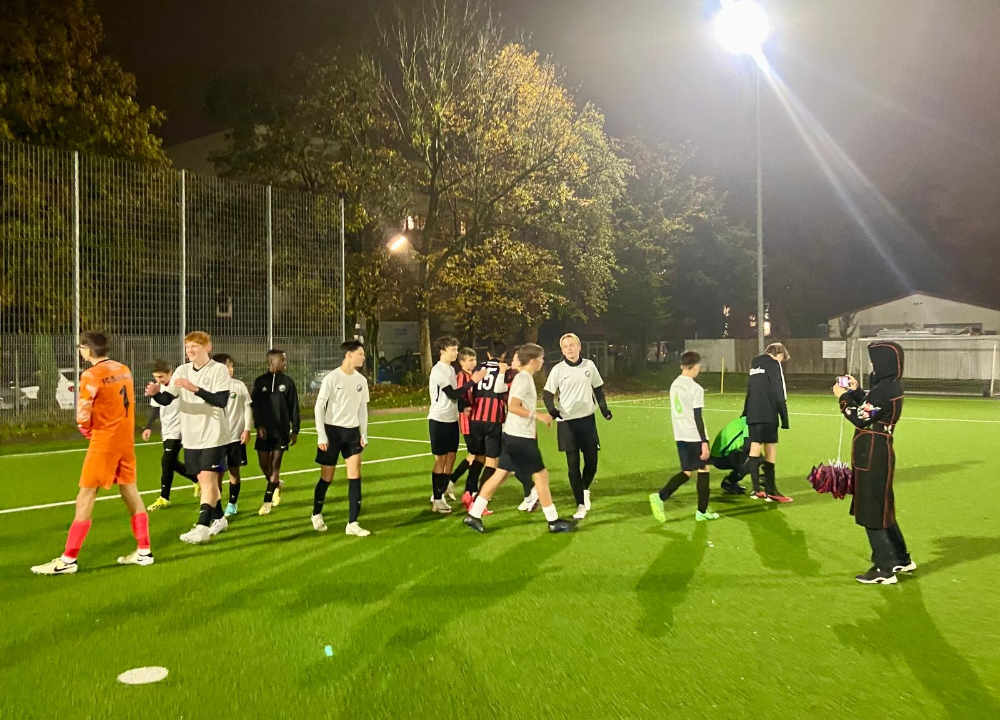
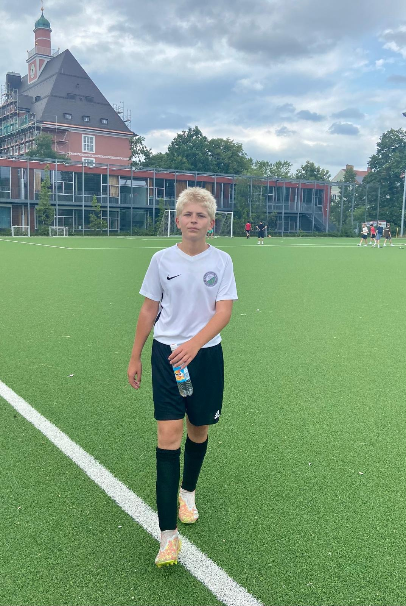
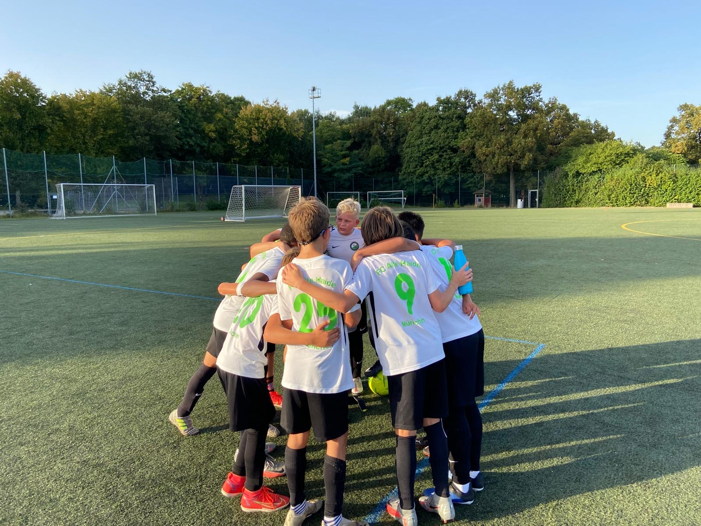
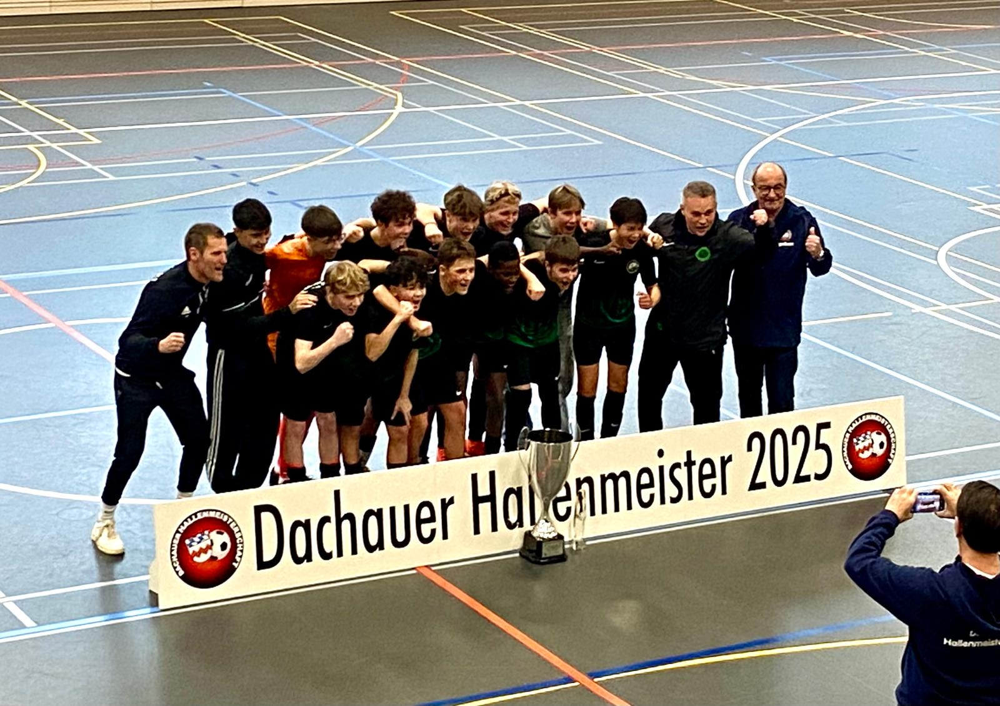
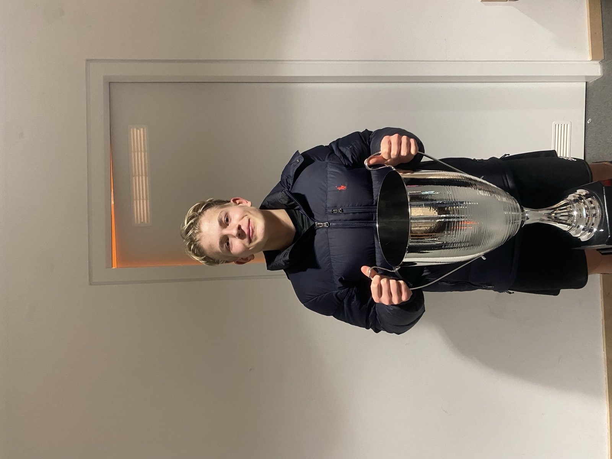
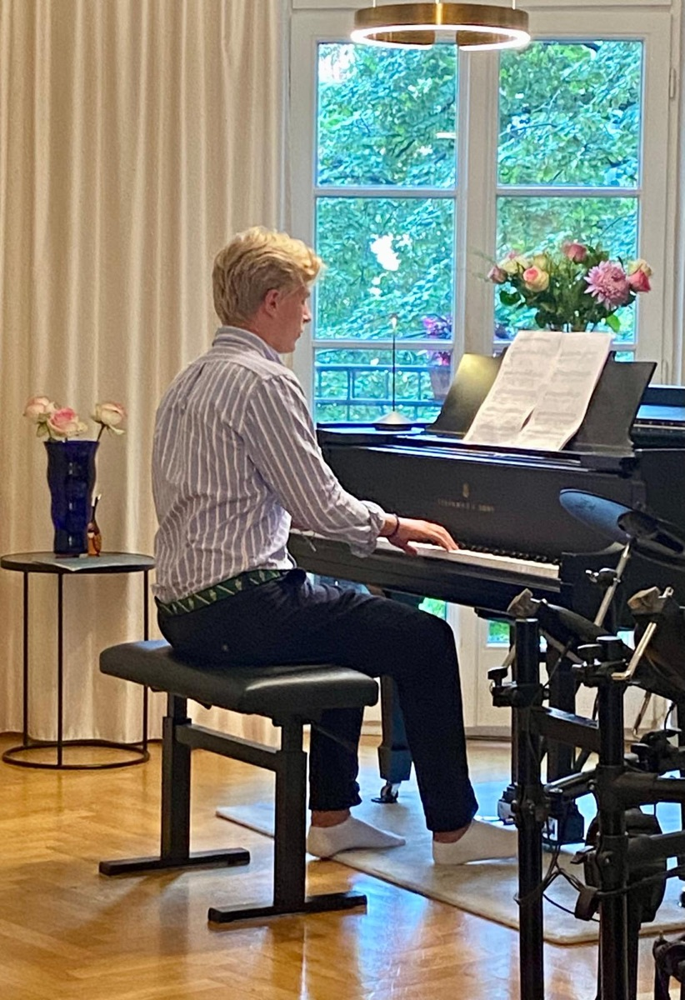

Hi, I'm Bene
First things first: why is the site called QriousCarl when my name is actually Bene? Carl is my middle name and it simply sounds more international. I'm a passionate programmer, footballer and piano player. On this site I'd like to give you a few insights into my hobbies and projects.
About me
I'm a 16-year-old student from Munich. I love bringing my own projects to life, where — free from the kind of regulations you often find at school — I can simply create technology that is useful to people. What drives me most is the anticipation of the moment when everything works, or when a mathematical concept suddenly makes sense. Money or success hopefully don't come first, though admittedly they are an incentive too.
What I see as my distinctive trait is perhaps my versatility. I attend a classical-languages grammar school that really has nothing to do with technology. I love Latin and Ancient Greek, but just as much the STEM subjects.
Football
I've been playing club football for nine years, and for six of them at Alte Haide DSC München. Here are a few impressions from my football career.





Piano
I've been playing the piano for six years. Playing the piano is the part of my day where I can truly relax. I love playing pieces by Chopin and Tchaikovsky, but I'm also trying to learn how to improvise jazz. Wish me luck!

Selected Work
Skills
Contact
Fancy a project or just want to say hello? Drop me a line.